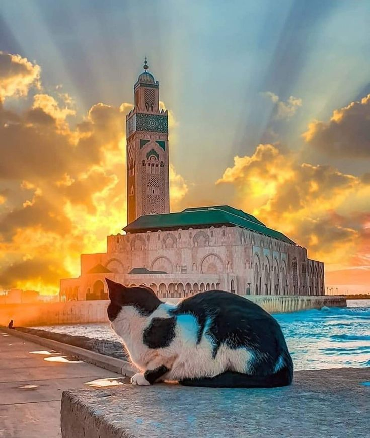

CASABLANCA
Mosque of Hassan II
Completed in 1993, the Mosque of Hassan II was designed by the French architect Michel Pinseau
and built by Bouygues. The mosque is built on a promontory looking out to the Atlantic Ocean.
The floor is made from glass, so the ocean below can be viewed and worshippers can pray over the sea.


